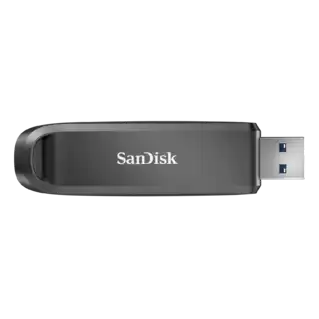

Product 1

- Fun collectible pocket monster design.
- Protective outer shell.
- Great novelty gift for fans.
The Pokémon USB drive perfectly blends functional digital storage with vibrant pop-culture collectability, making it an instant favourite for fans of the franchise. Shaped like iconic characters like Pikachu, Eevee, or a classic Poké Ball, this drive turns a mundane tech accessory into a fun desk companion. The exterior features a protective soft silicone outer shell that cushions the internal flash memory against accidental drops while providing a comfortable, non-slip grip. It serves as a fantastic novelty gift for students, gamers, and collectors who want to showcase their fandom at school or the office. Despite its playful, eye-catching design, the drive remains fully functional for saving homework files, casual photos, and music playlists. It proves that digital storage does not have to be boring, injecting a massive dose of personality and nostalgic charm into your daily workflow.
Product 2

- Advanced hardware-based data encryption.
- Massive multi-terabyte storage room.
- Secure password or biometric access.
This high-capacity encrypted USB drive is built specifically for professionals handling sensitive data, intellectual property, or confidential financial records. It combines massive multi-terabyte storage room with military-grade, hardware-based AES 256-bit encryption to safeguard information against unauthorised access. The drive locks automatically upon removal from a port, requiring a secure physical PIN code via an on-board keypad, a complex software password, or biometric fingerprint authentication to unlock. Designed to meet strict government compliance standards, the internal components are often sealed in a tamper-evident resin to prevent physical hacking attempts. It offers immense space to hold massive databases, high-resolution media archives, or complete system backups securely. For remote executives, legal teams, and healthcare IT specialists, this drive serves as an impenetrable portable vault, ensuring that critical data remains entirely safe even if the physical drive is lost or stolen.
Product 3

- Plug it into any standard USB-A port.
- Transfer files instantly with no setup required.
- Store your data safely in durable casing.
The classic USB-A flash drive remains the most reliable baseline for everyday data transfer. It features universal plug-and-play compatibility, meaning it works instantly across millions of older laptops, desktop computers, smart TVs, and vehicle audio systems without requiring adapters or internet connections. Built with a durable metal or hard plastic casing, this drive is engineered to survive the daily wear and tear of being tossed into backpacks or attached to heavy keychains. It represents a highly affordable, cost-effective solution for student assignments, printing shop runs, and basic document backups. While technology pushes toward smaller ports, the physical robustness and ubiquitous nature of the USB-A connector ensure this drive stays relevant. It provides a straightforward, no-frills storage option that requires absolutely zero technical setup or software installation, making it accessible for users of all ages and technical skill levels.